Question. If India replaced caste-based reservation with a single ₹8 lakh income test, how many people would protest, and which policy designs would keep that number small?
Method. A seat-allocation model built on the rule India uses and on JEE (Advanced) rank lists for 2021–2025 estimates who gains and loses IIT seats. A synthetic India of 120,000 agents across 640 districts turns those losses, and the threat to caste recognition, into protest through neighbourhood and national threshold cascades. The protest model is checked against news-event data from four real episodes. Thirteen scenarios were run 50 times each on paired worlds.
How many people would protest cannot be pinned down: across assumptions the data cannot settle, the baseline peak runs from 29.0 lakh to 6.78 crore. The ranking of interventions is far more stable than the headcount.
Watch the simulation
Both videos are drawn frame by frame from live runs of the stylized model (national population, fixed bandh days). Each square is a neighbourhood of about 12 lakh people, coloured by the share on the street that day. Both use the run closest to the 50-run median.
The abrupt switch over 40 days. Protest starts in SC neighbourhoods, spreads on each bandh call, and fades between calls as fatigue sets in.Four policy paths run on the same population with the same random draws. Only the policy differs. Heavy policing keeps more people on the street between bandhs and has four times the deaths; keeping caste sub-quotas barely produces a protest at all.
What this project comprises
It began as one stylized agent-based model. It is now four linked parts, each usable on its own:
Eligibility accounting under the real creamy-layer and EWS rules.
A seat-allocation model built on India's over-and-above choice rule, fitted to JEE (Advanced) rank lists and checked against published allotments. It can evaluate any vertical-reservation design.
A protest model on 640 districts, with bandhs called when turnout is credible, concession and backlash, and deaths; the original stylized model is kept alongside for comparison.
Calibration and uncertainty analysis: history matching to news-event counts for four episodes, predictions frozen and published before scoring, priors on every policy effect, an 11-variant structural ensemble and global sensitivity screening.
It compares policy designs on the same simulated worlds and says which comparisons survive the uncertainty. It does not forecast how many people would protest, where violence would occur, or which states organizers would carry.
The question
India reserves seats in public education and government jobs for Scheduled Castes (15%), Scheduled Tribes (7.5%), Other Backward Classes (27%) and, since 2019, Economically Weaker Sections of the general category (10%). OBC families above ₹8 lakh are already excluded, and EWS already applies only below ₹8 lakh. SC and ST quotas have no income test.
Converting everything to one income test changes more than it seems. The OBC creamy-layer test ignores salary and farm income, and the EWS test also excludes families with land or property, so the two existing income tests are not a simple ₹8 lakh cut:
6.8%
of Indians lose eligibility: SC, ST and non-creamy OBC families above ₹8 lakh
3.1%
gain it: poorer General families who fail the EWS asset tests today
−72%
of IIT seats lost by below-line SC students in a merged pool, though they keep eligibility
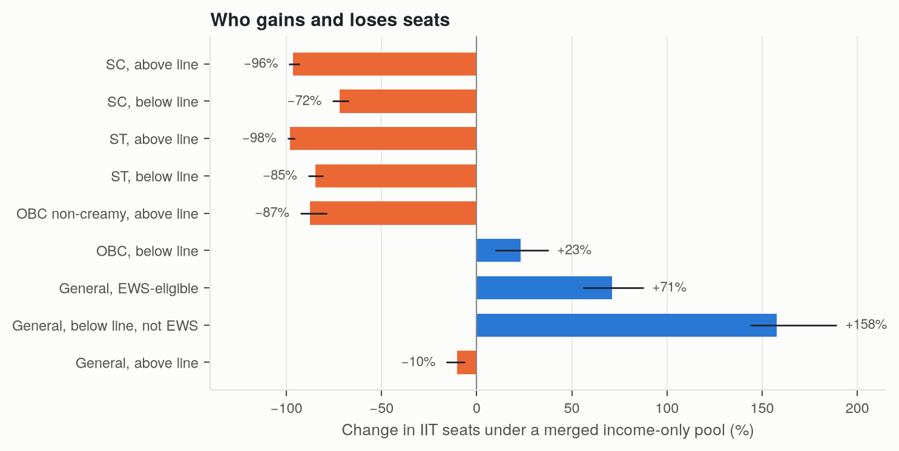
Who gains and loses IIT seats under a merged income-only pool (median, with 90% intervals over uncertainty about family incomes).
And reservation politics mobilizes around what a change means, not only who loses. A 2018 Supreme Court ruling on the SC/ST Atrocities Act removed nobody's quota and still triggered the largest Bharat Bandh on record. In 2024, a suggestion of a creamy layer for SC and ST triggered another.
Theory: why people would protest
Loss aversion
Losses weigh about 2.25 times as much as equal gains. Pierson shows that taking benefits away is harder than creating them, because losses are concentrated and visible while gains are diffuse.
In plain words. Losing a quota feels worse than never having had one.
Symbolic threat
People draw self-worth from their group and react strongly to threats to its standing. For SC and ST communities, caste-based reservation is also constitutional recognition of historical injustice.
In plain words. Many would protest because they read the change as erasing their community's recognition, not because they lose a seat.
Threshold cascades
Granovetter: each person joins once enough others have. Small changes in grievance can produce very large changes in turnout near the tipping point.
In plain words. Lower grievance a little and the chain reaction can stop early.
Organization
Resource mobilization theory: grievance is common, organized protest is not. But the 2018 bandh was organized with little central leadership or party backing, through local groups and WhatsApp; the 2024 bandh had opposition backing and drew a mixed response.
In plain words. Anger needs some machinery, but in 2018 the machinery was a phone in every pocket.
Repression and backfire
Visible force often backfires: deaths create martyrs and broaden support. Rydzak finds India's internet shutdowns are associated with more violent protest, not less.
In plain words. Force may shrink a crowd today and costs lives. Whether it also makes protest bigger depends on how people react to deaths.
How the model works
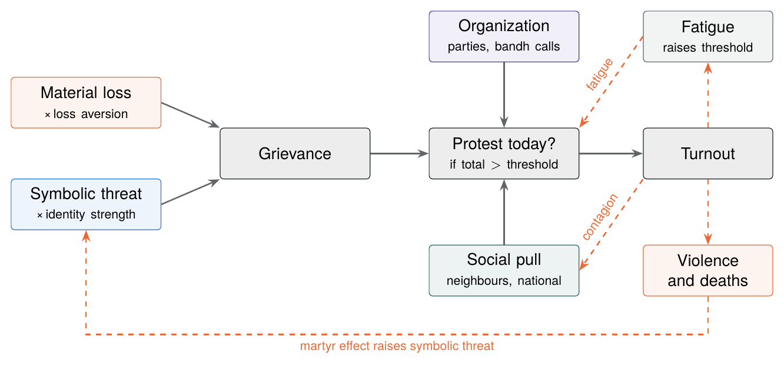
What drives one person's decision each day. Dashed arrows are feedback loops.
Grievance is material loss from the seat-allocation model (weighted 2.25× if it is a loss) plus symbolic threat multiplied by how strongly the person identifies with their group.
Social pull rises with yesterday's turnout in the neighbourhood and the group's national turnout. Both saturate: a crowd can only pull so hard.
Organization adds a push on bandh days. Organizations call a bandh when they expect a credible turnout, and the government may concede under pressure.
The person protests with a probability that rises smoothly as grievance plus pull plus push exceeds their personal threshold.
Protesting raises the threshold a little (fatigue). Deaths raise symbolic threat for the groups on the street (the martyr effect).
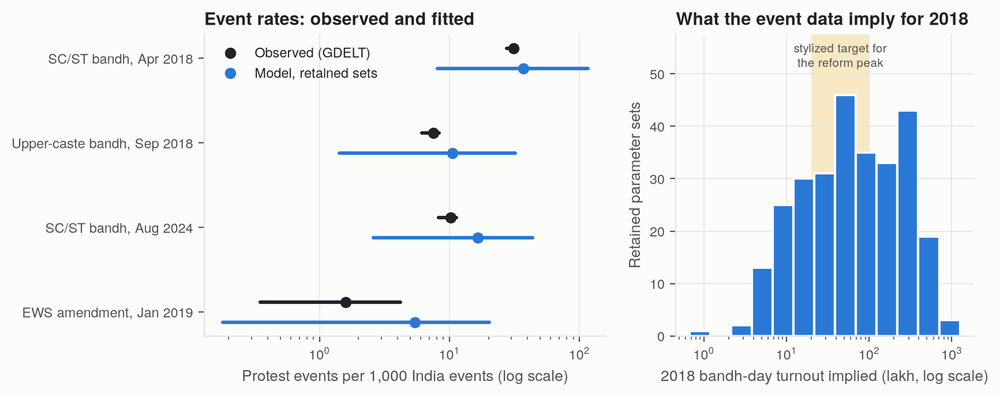
Checking the model against real protests. Parameter sets that cannot reproduce the news-event counts of all four episodes are discarded. The data pin down the relative size of the episodes much better than headcounts: the survivors imply 7–539 lakh people on the 2018 bandh day. Predictions of a held-out episode's deaths and geography were weak.
How the model was built
The final model is the fourth specification. The first two were badly wrong, and the way they were caught is part of the finding.
Unbounded contagion. Crowd influence had no ceiling, so almost every SC, ST and OBC agent protested: about 98 crore people.
Narrow thresholds. Bounding contagion allowed calibration, but turnout tipped abruptly and compensation alone appeared to cut protest by 91%. A validation test exposed it: removing all material loss, like the 2018 Atrocities Act ruling, left about 10,000 protesters, while 2018 produced India's largest bandh.
Reweighting. Shifting weight from material to symbolic grievance did not help. The symbolic-only shock stayed under 5% of baseline, so the problem was structural.
Wide thresholds. Modelling a long tail of low-threshold activists gave a smooth response. The symbolic-only shock now produces a bandh at 2018 scale.
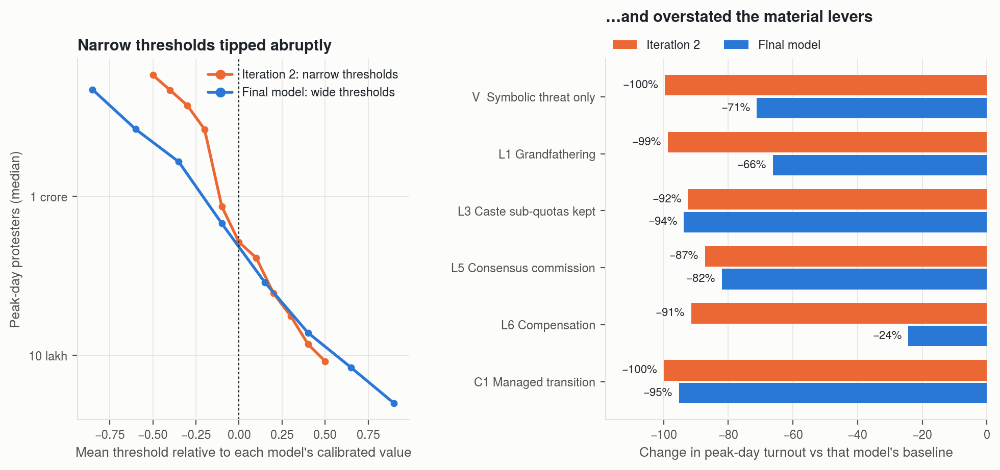
Iteration 2 against the final model. Calibration to a turnout number was not enough; a test against a different historical case caught the error.
Results
ReferenceSingle leverPackageSuppression
Dot: median of 50 runs. Bar: 10th–90th percentile. Dashed line: baseline median. Log scale in lakh (100 lakh = 1 crore). Deaths are the median over the campaign. The grounded model uses data-based inputs; the stylized model is the original version, calibrated to an assumed 20 lakh – 1 crore peak.
Scenario by scenario
Pick a scenario to see what it is, the theory behind it, how it enters the model, what happened, and why.
Figures
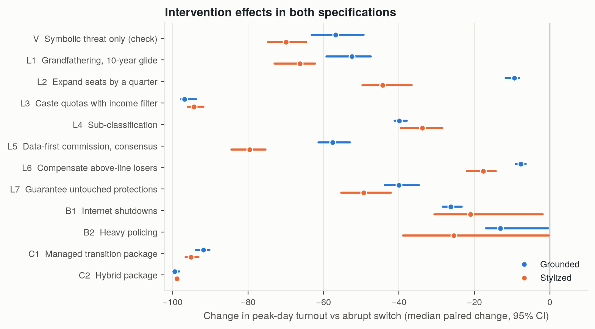
Change in peak-day turnout against the abrupt switch in the same simulated world, grounded and stylized models (median, 95% interval).
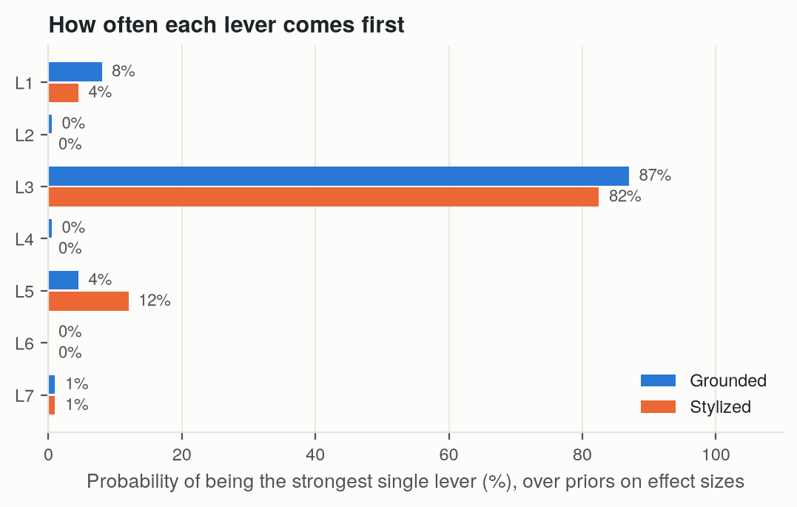
How often each lever comes first when every lever's strength is drawn from a wide range.
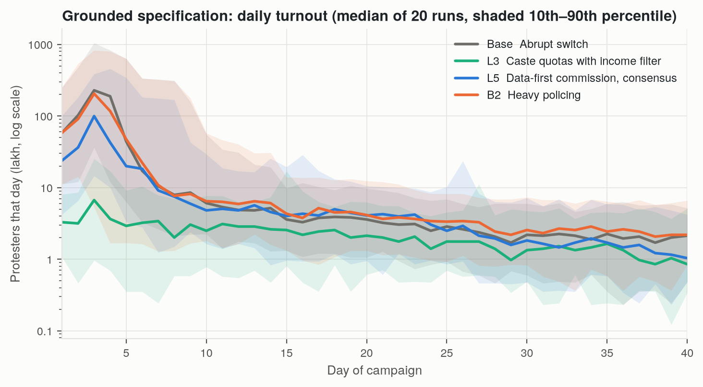
Grounded model: daily turnout. Protest peaks early and the government usually concedes within days.
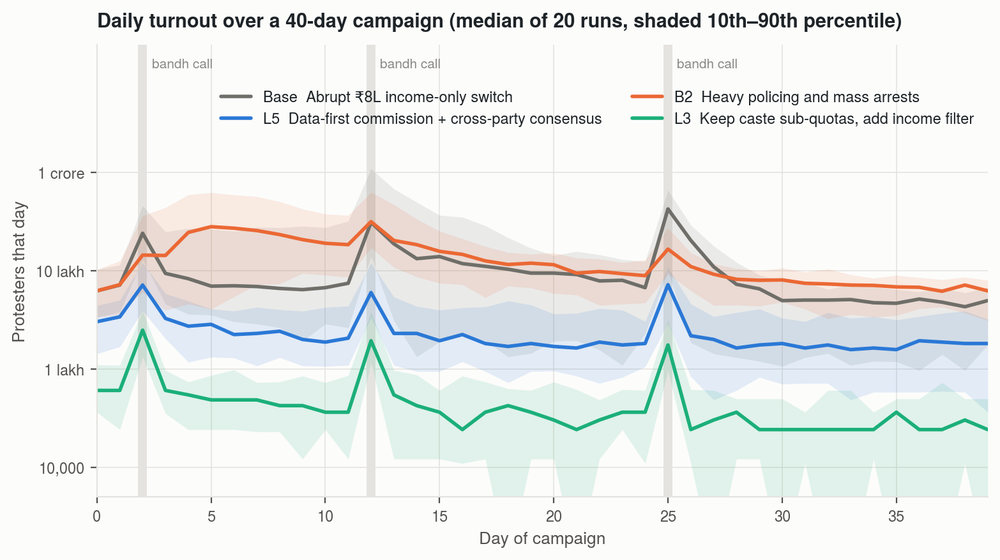
Daily turnout for four contrasting scenarios. Heavy policing flattens bandh-day spikes but keeps more people on the street between them.
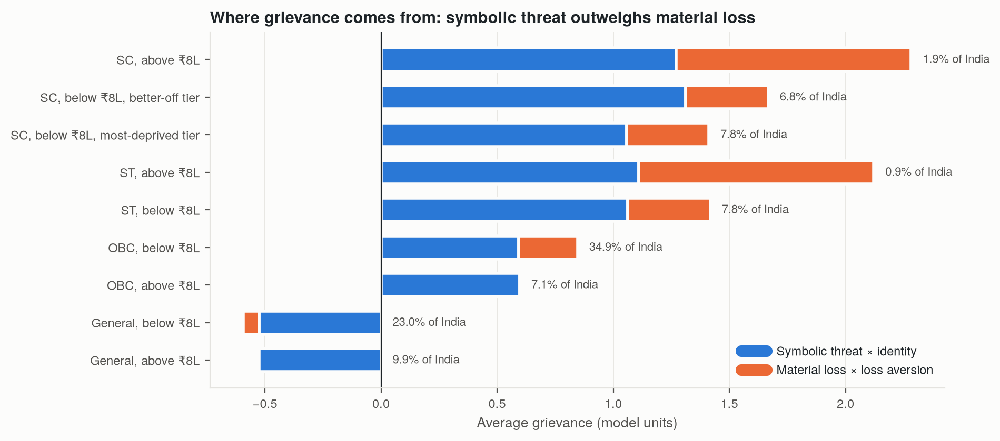
Where grievance comes from. Symbolic threat is the larger part for every group except SC and ST families above the line, who are under 3% of India.
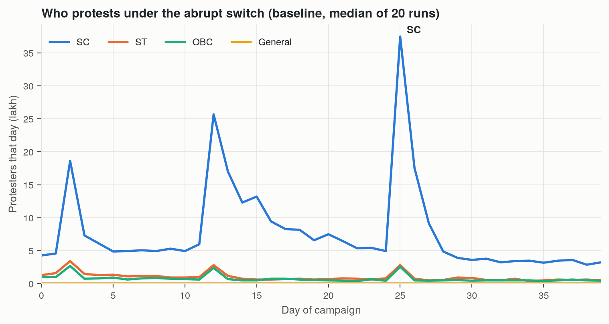
Who protests under the abrupt switch. SC turnout dominates; General-category turnout is zero because the reform favours them.
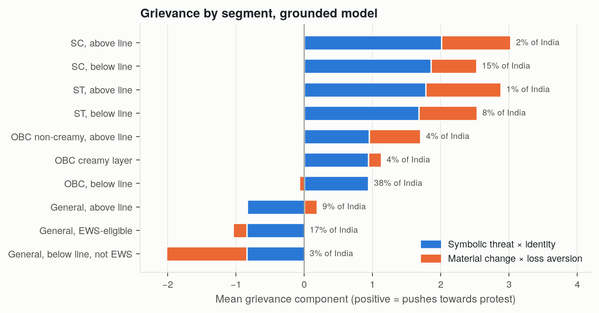
Where grievance comes from in the grounded model. Symbolic threat is the larger part everywhere, but seat losses add a third to a half for below-line SC and ST families.
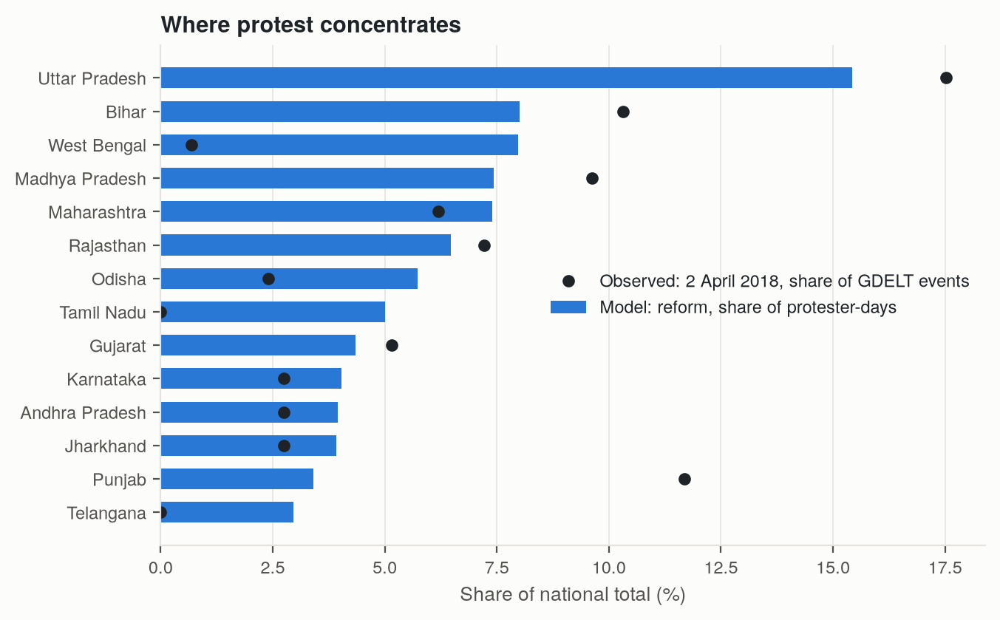
Where protest would concentrate: a demographic baseline. In 2018 Punjab, where the call began, had far more events than the model gives it.
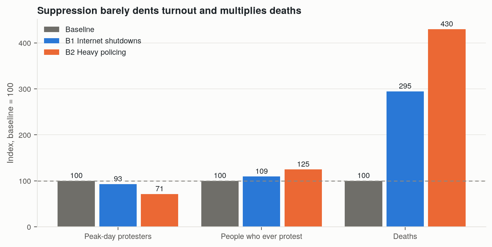
Suppression indexed to the baseline (= 100).
Robustness
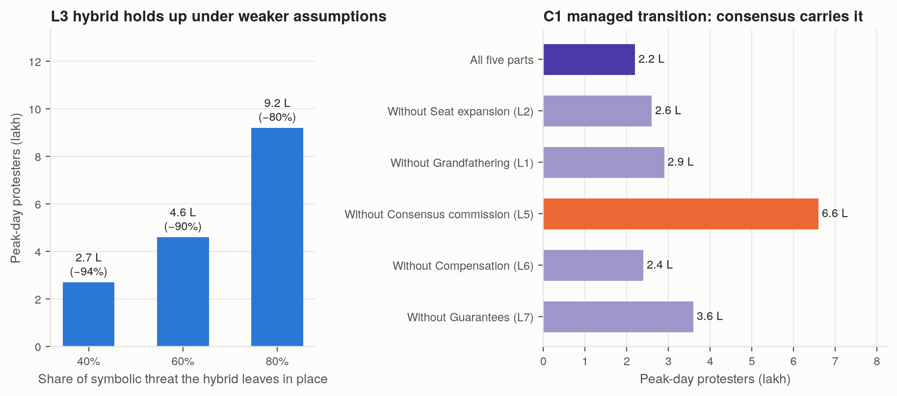
The hybrid still cuts turnout by about 80% if it removes only a fifth of the symbolic threat. In the managed transition, only removing the consensus commission changes the result materially.
Test
Peak (lakh)
Ever protest (crore)
What this means
A merged income pool is not neutral. It moves most seats of below-line SC and ST students to below-line General students, and adding seats on the EWS model does not undo that.
Design matters more than compensation. Keeping caste as the qualifier with an income filter inside it is the strongest option in every check; compensation and seat expansion are the weakest.
If the income-only end state is the goal, phasing and a process that changes what the reform means matter most. Whether a cross-party commission or grandfathering is stronger is not settled.
Suppression costs lives. It lowers the peak somewhat; whether it also broadens protest depends on how people react to deaths.
Limits: how strongly each policy acts is a judgement, handled with wide ranges. News-event data pin down relative, not absolute, protest size. The seat model covers IIT admissions only. Held-out predictions of deaths and geography were weak: this is a tool for comparing designs, not a forecast.